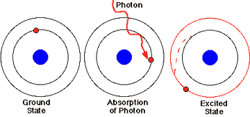
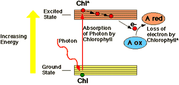
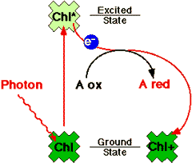

Photosynthesis Problem Set 1
Problem 9 Tutorial: Fate of excited pigment molecules
The conversion of light energy to chemical energy during photosynthesis begins when an excited pigment molecule:
What occurs when a photon of light energy is absorbed?
The energy of the photon is absorbed, and the photon disappears. Photon absorption boosts an electron from ground state to a higher orbital, in an all-or-none fashion. An "excited state" pigment is produced, with a higher energy level than the ground state pigment, but this excited state is very short-lived, about a billionth of a second.

Conversion of light energy to chemical energy
| Light energy is converted to chemical energy when a photochemically excited special chlorophyll molecule of the photosynthetic reaction center loses an electron, undergoing an oxidation reaction. |
 |
Primary Event in Photosynthesis
| The conversion of light energy to chemical energy is summarized in the diagram to the right. Light energy from the absorption of a photon excites an electron of P680 (photosystem II) or P700 (photosystem I) to a higher energy level. The reducing power of the electron is increased approximately 1 volt. Within about a billionth of a second, the excited pigment molecule undergoes an oxidation reaction. There is a corresponding reduction reaction of an electron carrier in the thylakoid membrane. The oxidized pigment is subsequently reduced by accepting an electron from water (P680+ of photosystem II) or plastocyanin (P7600+ of photosystem I). A good analogy of the reaction centers is to a photovoltaic cell, that converts sunlight into an electrical current. |
 |
  
   
The Biology Project
University of Arizona
Thursday, October 3, 1996
Contact the Development Team
http://biology.arizona.edu
All contents copyright © 1996. All rights reserved.
|